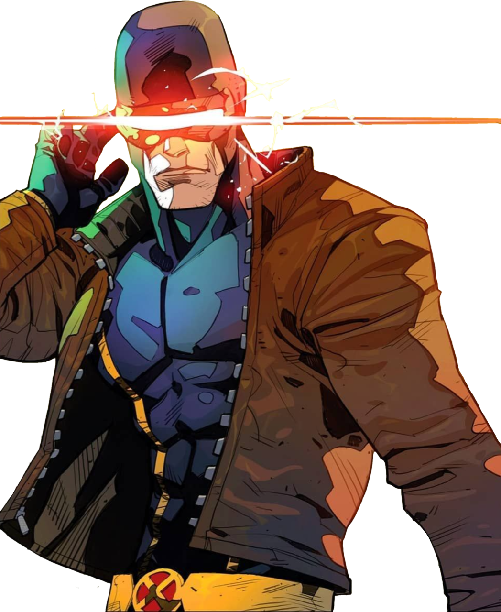

CYCLOPS

BIO
Scott Summers is the first of the X-Men recruited by Professor X; Xavier hand-picks Scott to lead his X-Men, and to carry on the legacy of his mutant-human-harmony ideals. Xavier views Scott as one of his most prized pupils; their relationship exhibits father/son qualities. From time to time, Scott's extreme loyalty to Xavier has cost him dearly in his relationships with others; but, over the course of the characters' publication history, he eventually emerges from Xavier's shadow as the X-Men's undisputed leader.
Full Name | Scott Summers
Origin/Birthplace | Anchorage, Alaska
Allegiance | Hero
Race | Human/Mutant
POWER STATS
Intelligence | 75%
Strength | 90%
Speed | 80%
Durability | 90%
Power | 80%
Combat Exp | 90%